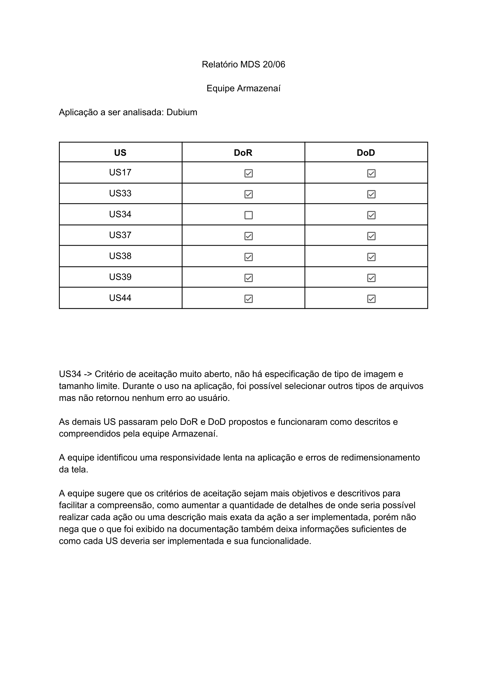

Estratégia de Testes
Historico de Revisão
| Data | Versão | Descrição | Autor(es) |
|---|---|---|---|
| 13/07/2023 | 0.1 | Definição de estratégia de teste | Eric e Yasmim |
| 13/07/2023 | 0.2 | Resultados dos testes | Eric e Yasmim |
| Tipo de teste | Nível de teste | Técnica de teste | Objetivo | Perspectiva | Escopo |
|---|---|---|---|---|---|
| Funcional | Unitário | Automático | Qualidade interna | Técnica | US05, US06, US18, US35, US17(MVP1), US18(MVP2), US19(MVP2), US48(MVP2), US49(MVP2) e US50(MVP2) |
| Funcional | Integração | Automático | Qualidade interna | Técnica | MVP1 e MVP2 |
| Funcional | Sistema | Caixa Preta | Qualidade externa | Negócio | MVP1, US45(MVP2), US46(MVP2), US48(MVP2), US49(MVP2) e U50(MVP2) |
| Usabilidade | Aceitação | Caixa Preta | Qualidade externa | Negócio | RNF04, RNF06, RNF07 |
Resultados
Teste Unitário
MVP 1
| US | Descrição | Critérios de Aceitação | Passou? | Observações |
|---|---|---|---|---|
| US05 | Eu, como usuário, gostaria de ser capaz de publicar perguntas para tirar minhas dúvidas. | - Caracteres especiais devem ser aceitos ao criar pergunta - Números devem ser aceitos ao criar pergunta - Perguntas devem ter identificações diferente Corpo, título, filtro e engenharia devem ser obrigatórios. |
Sim | --- |
| US06 | Eu, como usuário, gostaria de visualizar perguntas para fins de busca e estudo. | - A visualização deve conter o nome e o curso do usuário que fez a pergunta. - Uma lista de perguntas já feitas anteriormente deve ser visualizada. |
Sim | --- |
| US08 | Eu, como usuário, gostaria de poder deletar as minhas perguntas para caso de escrita incorreta. | - Somente o autor da pergunta pode apagá-la | Sim | --- |
| US17 | Eu, como usuário, gostaria de editar meus avisos para corrigir erros de digitação. | - O título e conteúdo devem ser editáveis. - Somente o autor do aviso pode editá-lo. |
Sim | --- |
| US35 | Eu, como usuário, gostaria de editar meus avisos para corrigir erros de digitação. | - O título e conteúdo devem ser editáveis. - Somente o autor do aviso pode editá-lo. |
Sim | --- |
MVP 2
| US | Descrição | Critérios de Aceitação | Passou? | Observações |
|---|---|---|---|---|
| US18 | Eu, como usuário, gostaria de editar minhas perguntas para corrigir erro de digitação. | - Somente o autor da pergunta pode editá-la. - Os campos que podem ser editados são: Título, conteúdo. |
Sim | --- |
| US19 | Eu, como usuário, gostaria de editar minhas respostas para corrigir erros de digitação. | - Somente o autor da pergunta pode editá-la. -O campo que pode ser editado é o conteúdo. |
Sim | --- |
| US48 | Eu, como usuário, gostaria de ter o conteúdo de avisos analisados por uma IA para maior confiabilidade. | Não deve ser criado o aviso, caso tenha conteúdo nocivo | Sim | --- |
| US49 | Eu, como usuário, gostaria de ter o conteúdo de perguntas filtrados por uma IA para remover palavras nocivas. | Não deve ser criado a pergunta, caso tenha conteúdo nocivo | Sim | --- |
| US50 | Eu, como usuário, gostaria de ter o conteúdo de respostas analisados por uma IA para maior confiabilidade. | Não deve ser criado a resposta, caso tenha conteúdo nocivo | Sim | --- |
Teste de Integração
O teste de integração é realizado em todas as branchs logo após um push no repositório. A partir da definição do worflow, foi escrito um arquivo chamado "workflow.yml". Toda vez que um push é realizado aciona o github actions que por sua vez executa alguns jobs:
Teste de Sistema
O teste de sistema foi realizado no MVP1 pela equipe Armazenaí e pode ser conferido a seguir:

Já o teste de sistema do MVP2 pode ser observado a seguir:
| US | Descrição | DOR | DOD | Critérios de Aceitação | Passou? | Conclusão |
|---|---|---|---|---|---|---|
| US45 | Eu, como usuário, quero ser capaz de pesquisar meu histórico de conversas por palavra-chave ou data específica, para que eu possa encontrar informações importantes de forma rápida e fácil. | OK | OK | - Deve ter um botão específico que indique a busca no chat. | Sim | A história está respeitando seus critérios de aceitação e passou pelo DOR e DOD, então passou no teste. |
| US46 | Eu, como usuário, quero ser capaz de arquivar conversas antigas que não são mais relevantes para mim, para manter minha lista de conversas organizada e fácil de usar. | OK | OK | - Deve ser possível acessar um chat arquivado. | Sim | A história está respeitando seus critérios de aceitação e passou pelo DOR e DOD, então passou no teste. |
| US48 | Eu, como usuário, gostaria de ter o conteúdo de avisos analisados por uma IA para maior confiabilidade. | OK | OK | - Não deve ser criado o aviso, caso tenha conteúdo nocivo. | Sim | A história está respeitando seus critérios de aceitação e passou pelo DOR e DOD, então passou no teste. |
| US49 | Eu, como usuário, gostaria de ter o conteúdo de perguntas filtrados por uma IA para remover palavras nocivas. | OK | OK | - Não deve ser criada a pergunta, caso tenha conteúdo nocivo. | Sim | A história está respeitando seus critérios de aceitação e passou pelo DOR e DOD, então passou no teste. |
| US50 | Eu, como usuário, gostaria de ter o conteúdo de respostas analisado por uma IA para maior confiabilidade. | OK | OK | - Não deve ser criada a resposta, caso tenha conteúdo nocivo. | Sim | A história está respeitando seus critérios de aceitação e passou pelo DOR e DOD, então passou no teste. |
Teste de Aceitação
O teste de aceitação foi realizado pela cliente, onde passamos em cada requisito não funcional e ela expôs se estavam de acordo com o solicitado e esperado.
| RNF | Descrição | Passou? | Conclusão |
|---|---|---|---|
| RNF04 | O conteúdo de interface da aplicação deve ser totalmente responsivo para dispositivos desktop. | Sim | A cliente confirmou que no ambiente desktop a aplicação é responsiva. |
| RNF06 | O padrão de cores deverá seguir o que foi bem definido pelo cliente: Azul, verde, preto, branco e cinza. | Sim | A cliente navegou pela aplicação e confirmou que foi seguido o padrão de cores. |
| RNF07 | Deverá ter modo claro e escuro. | Não | Não foi implementado. |